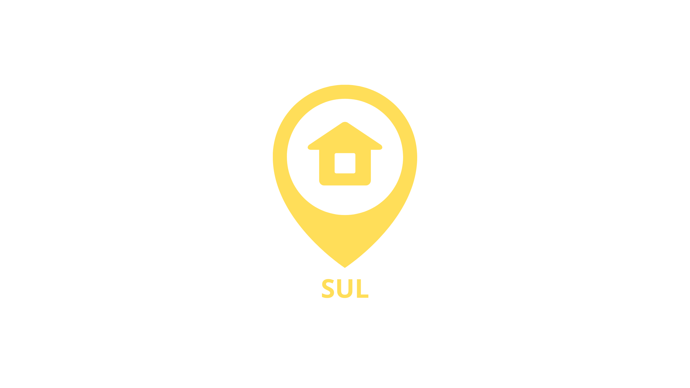
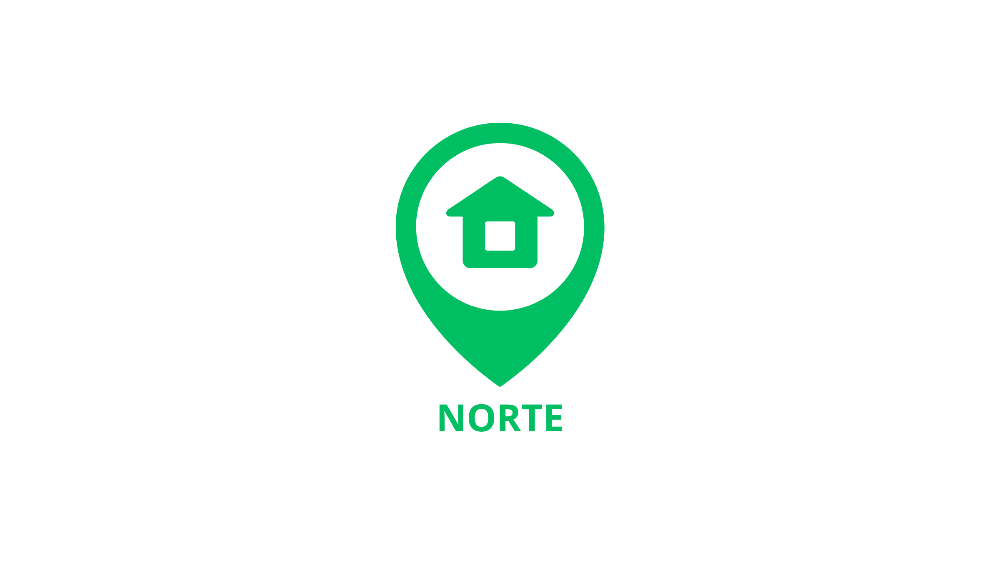
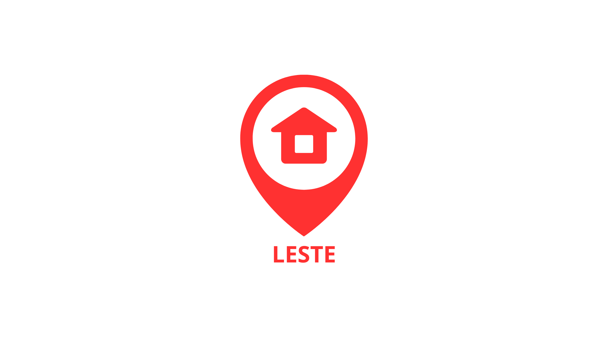

A coleta seletiva é a separação dos resíduos recicláveis dos não recicláveis. Com a prática da coleta seletiva, conseguimos reduzir o impacto ambiental e contribuir para a preservação do nosso planeta.
Separe os materiais recicláveis em casa, como papel, plástico, vidro e metal.
Os materiais são recolhidos por serviços especializados de coleta seletiva.
Os materiais são reciclados e transformados em novos produtos, diminuindo o desperdício.
A prática da coleta seletiva é essencial para reduzir a quantidade de lixo em aterros sanitários, diminuir a poluição ambiental e economizar recursos naturais. Cada pessoa pode fazer a diferença e ajudar na preservação do nosso planeta.

O lixo azul é destinado ao papel e papelão, como jornais, revistas, caixas de papelão e embalagens.

O lixo amarelo é para plásticos como garrafas, embalagens plásticas e sacolas.

O vidro é reciclável e deve ser descartado no lixo verde. Garrafas de vidro, potes e outros recipientes de vidro são exemplos de materiais que podem ser reciclados.

O lixo vermelho é destinado a materiais perigosos, como pilhas, baterias e produtos químicos.

O lixo preto é destinado aos resíduos orgânicos, como restos de comida, cascas de frutas, vegetais, entre outros.